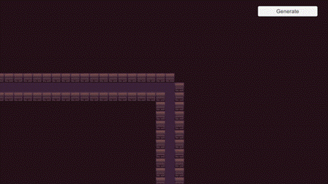
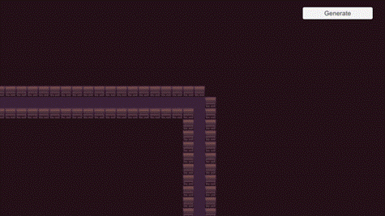

Previous Work
Procedurally Generated Dungeon Crawler Prototype

For my Individual Games Technology Project - also known as my Final Year Project, I decided to study into the concept of procedurally generated game levels. I thought the best way to explore this topic would be to make a 2d dungeon-crawler game, where every dungeon is procedurally generated before playing, and is then regenerated upon game replay.
After some research, I decided that I would generate my levels using a method of generation known as The Random Walk. The random walk consisted of an entity choosing a cardinal direction at random, taking one step in that direction, and then picking a new direction, repeating this process for however long specified. This would result in a single path. To generate a room-like shape with this method, I can repeat the process using the same start point.
This gives us a single room, but for a dungeon layout we need a few rooms connected by corridors. Fortunately, we can use the random walk generation to also give us our corridors - instead of picking a new direction after every step, what if we picked one direction and moved x amount of steps in that one direction? The result would then be a straight path, but what if at the end of that path we had a 50% chance to either generate a room, or generate another corridor? That way we would have both rooms and corridors. This is known as corridor-first generation, as - in a sense - we are generating corridors before rooms.

Here are both of the implementations within Unity:
 

And here are some examples of full dungeon layouts when generated: